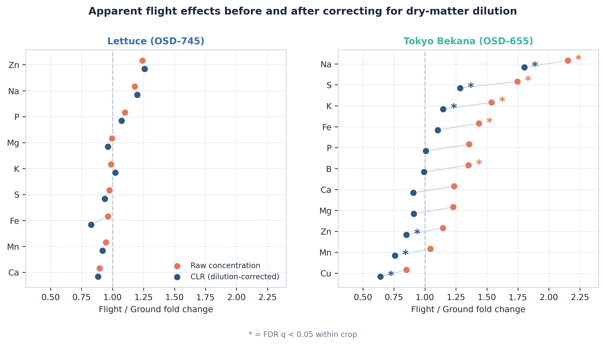
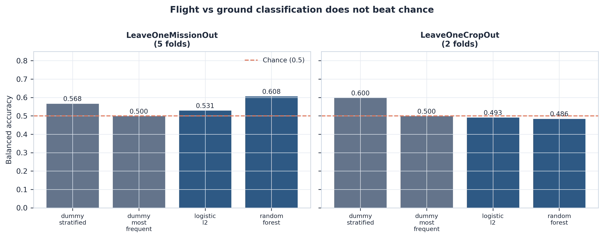
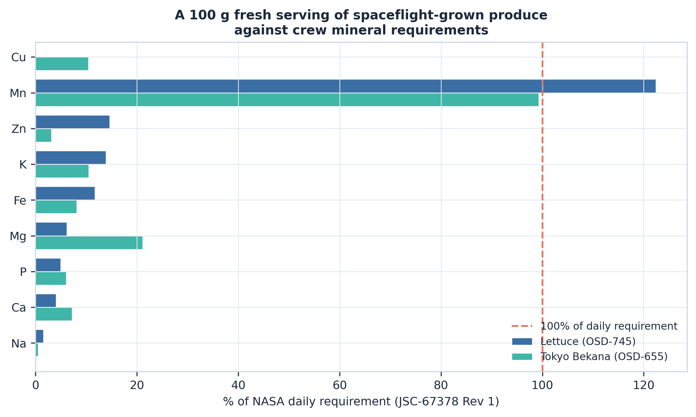
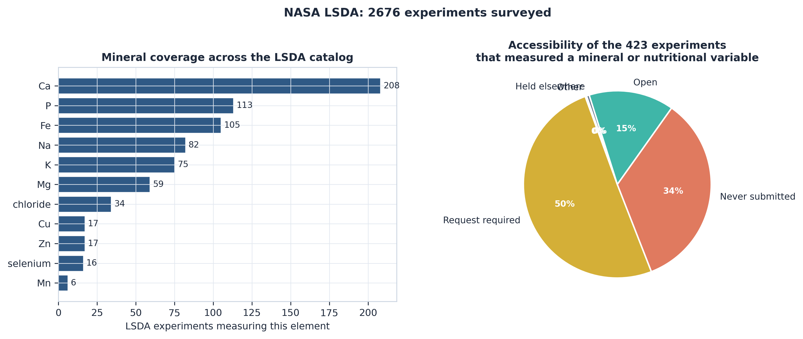
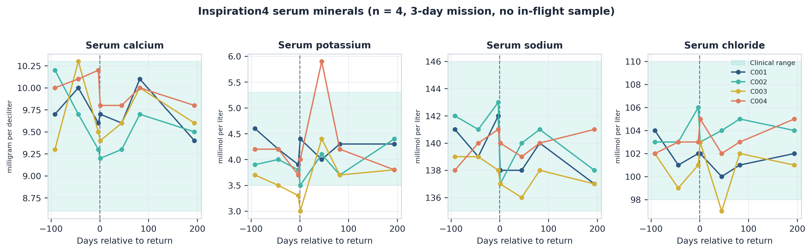

A 1000-fold unit error in an open NASA dataset
OSD-655 labels calcium, potassium, magnesium, phosphorus and sulfur as mg/g dry weight — in both its data files and its archived data dictionary. The values are µg/g. Read as stated, potassium would be 2,943% of dry weight.
Any analysis pooling OSD-655 with another elemental dataset without correcting this is wrong by a factor of 1000 on five of twelve elements. Full curation report →
The two Veggie crops respond differently
Flight/ground fold changes, before and after correcting for dry-matter dilution with a centred log-ratio transform. Concentrations are compositional: if flight tissue differs in dry-matter composition, every element shifts together even with no change in uptake.
| Element | Lettuce (raw) | Tokyo Bekana (raw) | Tokyo Bekana (CLR) | After correction |
|---|---|---|---|---|
| Potassium | 0.99 | 1.54 | 1.15 | survives |
| Sodium | 1.18 | 2.15 | 1.80 | survives |
| Sulfur | 0.97 | 1.75 | 1.28 | survives |
| Calcium | 0.90 | 1.23 | 0.91 | dilution artefact |
| Iron | 0.96 | 1.43 | 1.10 | dilution artefact |
Lettuce shows no element significantly altered on either scale. The apparent calcium and iron increases — the accumulation hypothesis this work set out to test — do not survive correction.

No flight signature transfers between crops
| Cross-validation | Best model | Baseline | Margin |
|---|---|---|---|
| Leave-one-mission-out | 0.608 | 0.568 | +0.040 |
| Leave-one-crop-out | 0.486 | 0.600 | -0.113 |
Training on one crop and testing on the other performs below chance. That is not a failure of method — it is the measurement.

Overload is not the risk; sufficiency is the question
A 100 g fresh serving against NASA daily requirements (JSC-67378 Rev 1): potassium 13.9% (lettuce) / 10.5% (Tokyo Bekana); calcium 4.0% / 7.2%; manganese 122% / 99%.
Reaching NASA's iron upper limit would require 0.85 kg of fresh tissue per day, against a per-pillow yield of roughly 45 g. Dietary mineral overload from Veggie produce is not achievable at plausible harvest scales.

Access, not measurement, is the bottleneck
Of 2,676 LSDA experiments, 423 measured a mineral or nutritional variable. Only 62 are openly available; 213 require a formal data request and 145 were never submitted to the archive.
The highest-value dataset for linking diet to crew mineral status — SMO-016E Nutritional Status Assessment (27 astronauts, ~165-day missions, in-flight sampling, paired dietary intake) — is request-gated. A prepared request is included in the repository.

Astronaut serum minerals
Inspiration4 clinical chemistry: 4 crew, 28 observations across 7 timepoints. Potassium fell in 3 of 4 crew at first return.
4 subjects, a 3-day mission, and 0 in-flight samples. These data describe what happened to four people; they cannot establish a spaceflight effect, and no inferential test is performed.

Note on a prior analysis
An earlier dashboard published elemental results and model accuracies for
these same studies. Those values were generated by a numpy.random
routine rather than measured, and the reported model metrics were hardcoded
literals. They are not comparable with the results here. A correction note and
a tested replacement data-acquisition module are in the repository under
veggie_correction/.